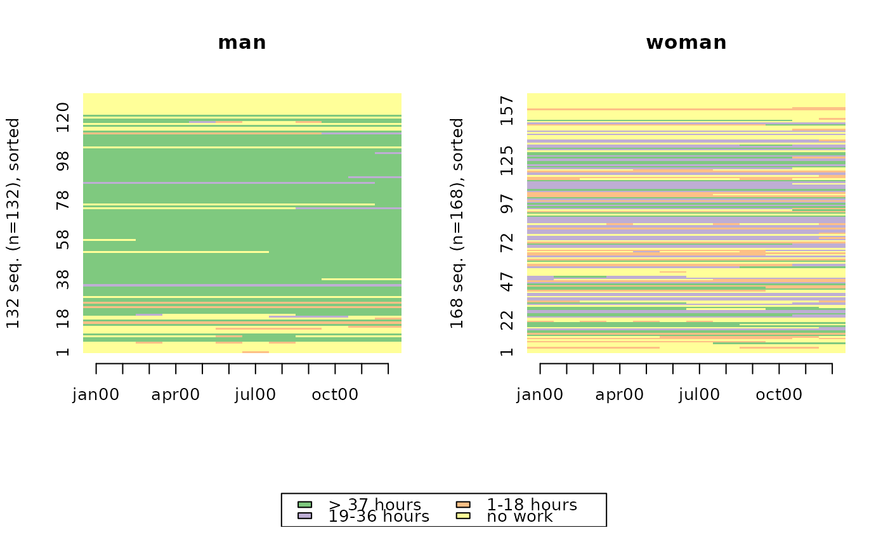
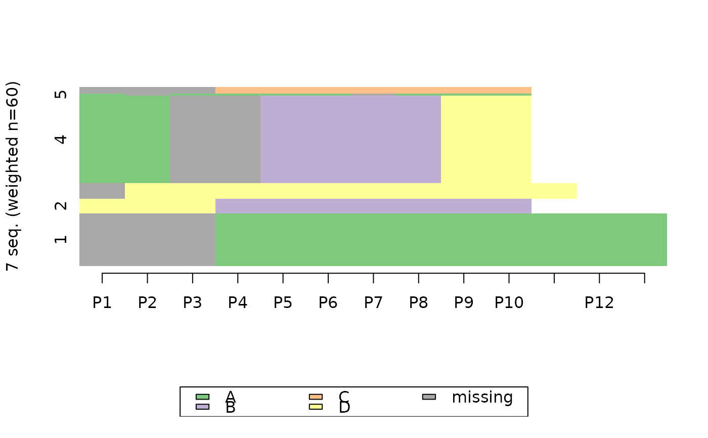
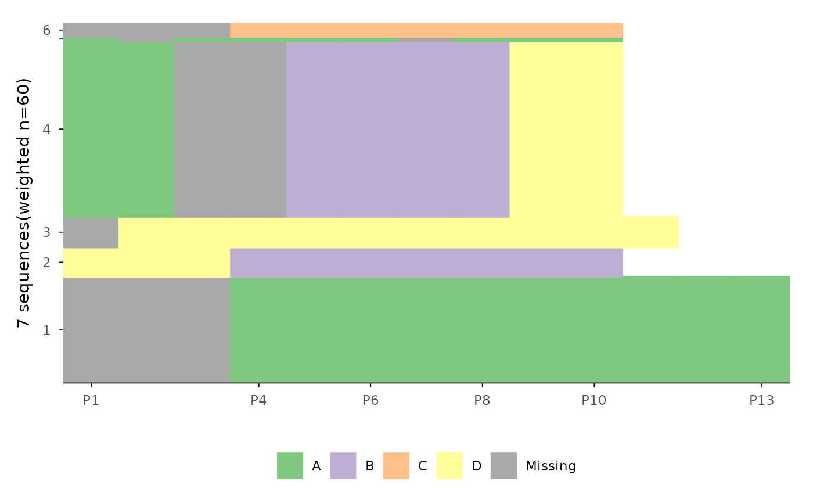
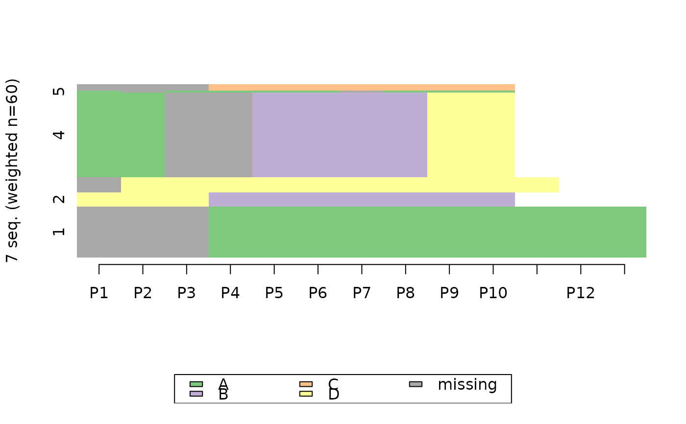
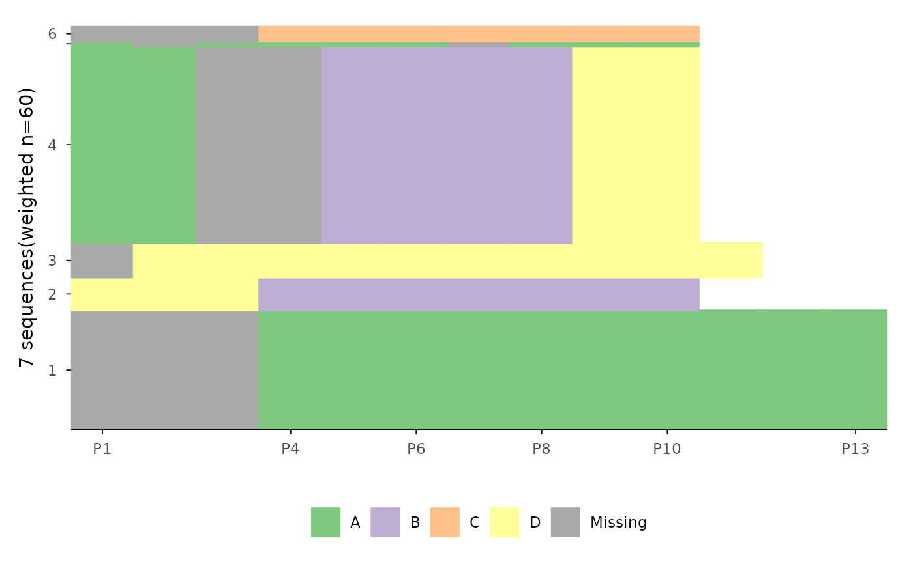
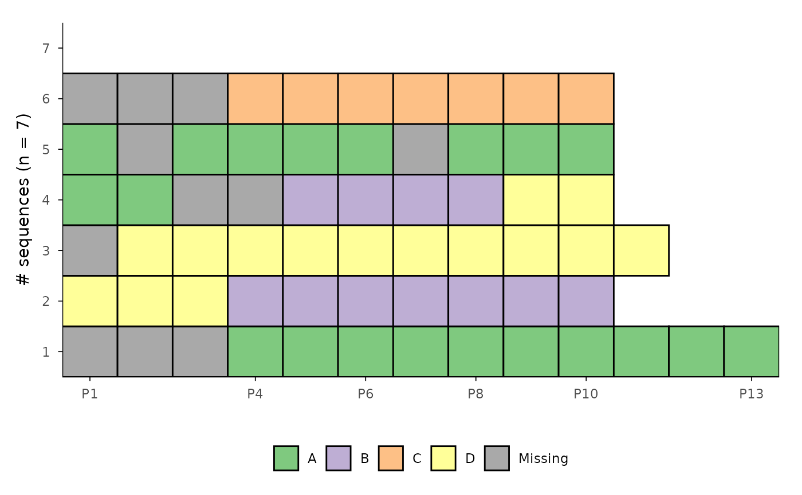
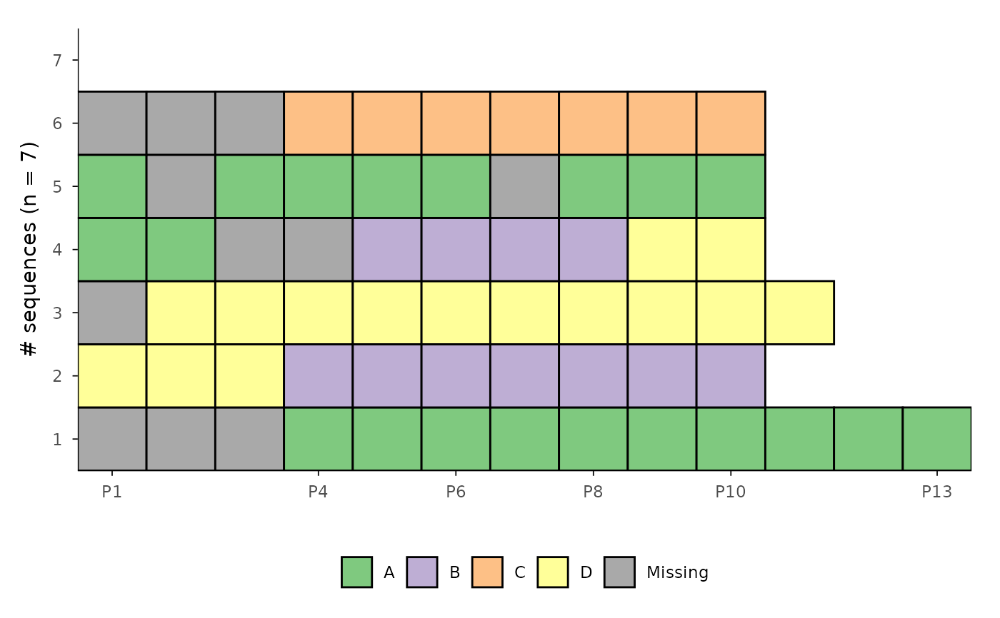

Function for rendering sequence index plots with
ggplot2 (Wickham 2016)
instead
of base R's plot function that is used by
TraMineR::seqplot
(Gabadinho et al. 2011)
.
Usage
ggseqiplot(
seqdata,
no.n = FALSE,
group = NULL,
sortv = NULL,
weighted = TRUE,
border = FALSE,
facet_scale = "free_y",
facet_ncol = NULL,
facet_nrow = NULL,
...
)Arguments
- seqdata
State sequence object (class
stslist) created with theTraMineR::seqdeffunction.- no.n
specifies if number of (weighted) sequences is shown as part of the y-axis title or group/facet title (default is
TRUE)- group
A vector of the same length as the sequence data indicating group membership. When not NULL, a distinct plot is generated for each level of group.
- sortv
Vector of numerical values sorting the sequences or a sorting method (either
"from.start"or"from.end"). See details.- weighted
Controls if weights (specified in
TraMineR::seqdef) should be used. Default isTRUE, i.e. if available weights are used- border
if
TRUEbars are plotted with black outline; default isFALSE(also acceptsNULL)- facet_scale
Specifies if y-scale in faceted plot should be free (
"free_y"is default) or"fixed"- facet_ncol
Number of columns in faceted (i.e. grouped) plot
- facet_nrow
Number of rows in faceted (i.e. grouped) plot
- ...
if group is specified additional arguments of
ggplot2::facet_wrapsuch as"labeller"or"strip.position"can be used to change the appearance of the plot
Value
A sequence index plot. If stored as object the resulting list object also contains the data (spell format) used for rendering the plot.
Details
Sequence index plots have been introduced by Scherer (2001) and display each sequence as horizontally stacked bar or line. For a more detailed discussion of this type of sequence visualization see, for example, Brzinsky-Fay (2014) , Fasang and Liao (2014) , and Raab and Struffolino (2022) .
The function uses TraMineR::seqformat
to reshape seqdata stored in wide format into a spell/episode format.
Then the data are further reshaped into the long format, i.e. for
every sequence each row in the data represents one specific sequence
position. For example, if we have 5 sequences of length 10, the long file
will have 50 rows. In the case of sequences of unequal length not every
sequence will contribute the same number of rows to the long data.
The reshaped data are used as input for rendering the index plot using
ggplot2's geom_rect. ggseqiplot uses
geom_rect instead of geom_tile
because this allows for a straight forward implementation of weights.
If weights are specified for seqdata and weighted=TRUE
the sequence height corresponds to its weight.
If weights and a grouping variable are used, and facet_scale="fixed"
the values of the y-axis are not labeled, because
ggplot2 reasonably does not allow for varying scales
when the facet scale is fixed.
When a sortv is specified, the sequences are arranged in the order of
its values. With sortv="from.start" sequence data are sorted
according to the states of the alphabet in ascending order starting with the
first sequence position, drawing on succeeding positions in the case of
ties. Likewise, sortv="from.end" sorts a reversed version of the
sequence data, starting with the final sequence position turning to
preceding positions in case of ties.
Note that the default aspect ratio of ggseqiplot is different from
TraMineR::seqIplot. This is most obvious
when border=TRUE. You can change the ratio either by adding code to
ggseqiplot or by specifying the ratio when saving the code with
ggsave.
References
Brzinsky-Fay C (2014).
“Graphical Representation of Transitions and Sequences.”
In Blanchard P, Bühlmann F, Gauthier J (eds.), Advances in Sequence Analysis: Theory, Method, Applications, Life Course Research and Social Policies, 265–284.
Springer, Cham.
doi:10.1007/978-3-319-04969-4_14
.
Fasang AE, Liao TF (2014).
“Visualizing Sequences in the Social Sciences: Relative Frequency Sequence Plots.”
Sociological Methods & Research, 43(4), 643–676.
doi:10.1177/0049124113506563
.
Gabadinho A, Ritschard G, Müller NS, Studer M (2011).
“Analyzing and Visualizing State Sequences in R with TraMineR.”
Journal of Statistical Software, 40(4), 1–37.
doi:10.18637/jss.v040.i04
.
Raab M, Struffolino E (2022).
Sequence Analysis, volume 190 of Quantitative Applications in the Social Sciences.
SAGE, Thousand Oaks, CA.
https://sa-book.github.io/.
Scherer S (2001).
“Early Career Patterns: A Comparison of Great Britain and West Germany.”
European Sociological Review, 17(2), 119–144.
doi:10.1093/esr/17.2.119
.
Wickham H (2016).
ggplot2: Elegant Graphics for Data Analysis, Use R!, 2nd ed. edition.
Springer, Cham.
doi:10.1007/978-3-319-24277-4
.
Examples
# Use example data from TraMineR: actcal data set
data(actcal)
# We use only a sample of 300 cases
set.seed(1)
actcal <- actcal[sample(nrow(actcal), 300), ]
actcal.lab <- c("> 37 hours", "19-36 hours", "1-18 hours", "no work")
actcal.seq <- seqdef(actcal, 13:24, labels = actcal.lab)
#> [>] 4 distinct states appear in the data:
#> 1 = A
#> 2 = B
#> 3 = C
#> 4 = D
#> [>] state coding:
#> [alphabet] [label] [long label]
#> 1 A A > 37 hours
#> 2 B B 19-36 hours
#> 3 C C 1-18 hours
#> 4 D D no work
#> [>] 300 sequences in the data set
#> [>] min/max sequence length: 12/12
# ex1 using weights
data(ex1)
ex1.seq <- seqdef(ex1, 1:13, weights = ex1$weights)
#> [>] found missing values ('NA') in sequence data
#> [>] preparing 7 sequences
#> [>] coding void elements with '%' and missing values with '*'
#> [!!] 1 empty sequence(s) with index: 7
#> may produce inconsistent results.
#> [>] 4 distinct states appear in the data:
#> 1 = A
#> 2 = B
#> 3 = C
#> 4 = D
#> [>] state coding:
#> [alphabet] [label] [long label]
#> 1 A A A
#> 2 B B B
#> 3 C C C
#> 4 D D D
#> [>] sum of weights: 60 - min/max: 0/29.3
#> [>] 7 sequences in the data set
#> [>] min/max sequence length: 0/13
# sequences sorted by age in 2000 and grouped by sex
# with TraMineR::seqplot
seqIplot(actcal.seq, group = actcal$sex, sortv = actcal$age00)

# with ggseqplot
ggseqiplot(actcal.seq, group = actcal$sex, sortv = actcal$age00)
 # sequences of unequal length with missing state, and weights
seqIplot(ex1.seq)

ggseqiplot(ex1.seq)

# ... turn weights off and add border
seqIplot(ex1.seq, weighted = FALSE, border = TRUE)
# sequences of unequal length with missing state, and weights
seqIplot(ex1.seq)

ggseqiplot(ex1.seq)

# ... turn weights off and add border
seqIplot(ex1.seq, weighted = FALSE, border = TRUE)
 ggseqiplot(ex1.seq, weighted = FALSE, border = TRUE)

ggseqiplot(ex1.seq, weighted = FALSE, border = TRUE)
